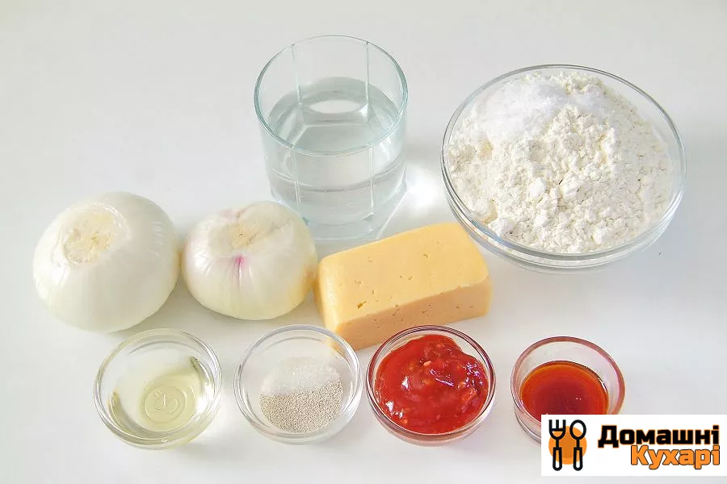
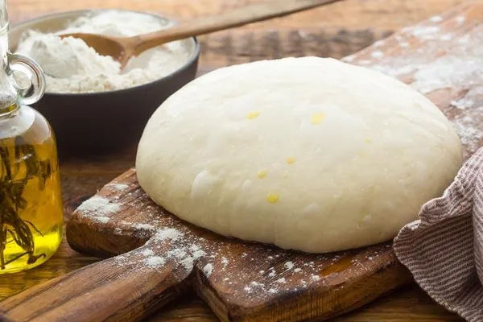
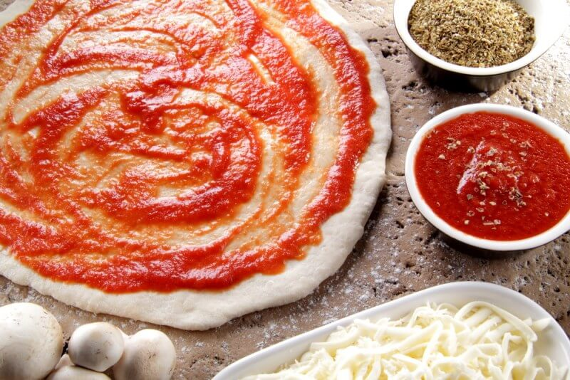

Pizza
Instructions
- Prepare all ingredients. 
- In a small bowl, dissolve the sugar and yeast in warm water. Let it sit for 5-10 minutes until it becomes frothy.
- In a large mixing bowl, combine the flour and salt. Add the yeast mixture and olive oil. Mix until a dough forms.
- Knead the dough on a floured surface for 5-7 minutes until smooth and elastic. 
- Place the dough in an oiled bowl, cover it with a clean towel, and let it rise in a warm place for about 1 hour or until it doubles in size.
- Preheat your oven to 220°C (425°F).
- Once the dough has risen, punch it down and divide it into 2 equal portions (for two pizzas).
- Roll each portion out on a floured surface to your desired thickness and transfer it to a pizza stone or baking tray.
- Spread a layer of tomato sauce evenly over the dough, leaving a small border for the crust. 
- Sprinkle grated mozzarella cheese on top.
- Add your choice of toppings like pepperoni, mushrooms, olives, or bell peppers.
- Bake the pizza in the preheated oven for 12-15 minutes, or until the crust is golden and the cheese is bubbly and slightly browned.
- Remove the pizza from the oven, garnish with fresh basil if desired, slice, and enjoy!
- Enjoy your homemade pizza!
Ingredients
-
For the dough:
- 500g all-purpose flour
- 7g (1 packet) active dry yeast
- 1 teaspoon sugar
- 300 ml warm water
- 2 tablespoons olive oil
- 1 teaspoon salt
For the topping:
- 200g tomato sauce
- 200g mozzarella cheese (grated)
- Your choice of toppings (pepperoni, mushrooms, olives, bell peppers, etc.)
- Fresh basil (optional)